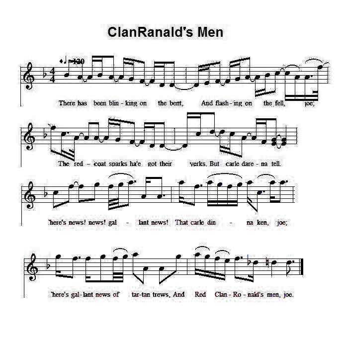
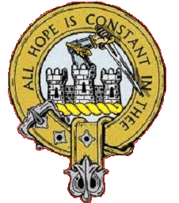
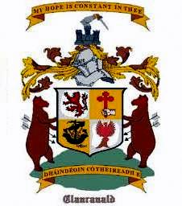

Clan Ronald's Men
Les hommes de ClanRanald
Author unknown
From Robert Malcolm's "Jacobite Minstrelsy", 1828Tune - Mélodie
" Mac 'Ic Allein " (Appellative of the Clan's Chief)
From Captain Fraser's "Airs and Melodies Peculiar to the Highlands of Scotland and the Isles", No. 188, pg. 77, 1874
Sequenced by Christian Souchon

|
To the tune:
"This song, on account of the air to which it is usually sung, and its own lively and vigorous expression, is a general favourite. The conduct of Clanronald's men, however, was not always such as to justify the chorus ; since there can be no doubt that their punctilious or rather superstitious folly lost the day at Culloden. After the army had been drawn up in order of battle, and was about to engage with the enemy, they refused to advance, because, forsooth, they bad been posted on the left, instead of the right. As an excuse for such absurd conduct, they alleged that from the battle of Bannockburn till that day, they had been allowed the post of honour on the right, and they considered their being placed upon the left as a bad omen. The author of Clan-Ronald's Men doubtless wrote it to cloak the disgrace of the Macdonalds, whose conduct at Culloden excited universal indignation among the Jacobites, and indeed amongst all rational men." Source "Jacobite Minstrelsy", page 308, 1828 |
A propos de la mélodie:
"Ce chant doit sa popularité à la mélodie sur laquelle on le chante généralement et au style enjoué et vigoureux du texte. La conduite des hommes de Clanranald, ne fut cependant pas de nature à justifier le refrain et l'on peut voir dans leur susceptibilité ou plutôt leur superstition la cause de la défaite de Culloden. Après que l'armée fut rangée en ordre de bataille et au moment de commencer le combat, ils refusèrent d'avancer, sous prétexte, qu'on leur avait assigné l'aile gauche et non la droite. A titre d'excuse pour cette conduite insensée, ils faisaient valoir que depuis la bataille de Bannockburn, l'honneur de combattre à droite leur revenait de droit et que les engager à gauche était un mauvais présage. L'auteur des "Hommes de ClanRanald" a certainement écrit ce chant pour cacher l'opprobre dont étaient couverts les McDonald dont la conduite à Culloden excitait l'indignation générale tant chez les Jacobites que chez tous les gens sensés." Source "Jacobite Minstrelsy", page 308, 1828 |

|
 RED CLAN RONALD'S MEN [1] 1. There has been blinking on the bent, And flashing on the fell, joe ; The red-coat sparks ha'e got their yerks, But carle darena tell, joe. There's news ! — news ! gallant news ! That carle dinna ken, joe ; There's gallant news of tartan trews, And Red Clan-Ronald's men, joe. 2. The prig dragoons, they swore by 'zoons, The rebels' hides to tan, joe ; But when they fand the Highland brand, They funkit and they ran, joe. There's news ! news ! &c. 3. Had English might stood by the right, [2] As they did vaunt full vain, joe ; Or play'd the parts of Highland hearts, The day was a' our ain, joe. There had been news ! &c. 4. O wad the frumpy froward Duke, Wi' a' his brags o' weir, joe, But meet our Charlie hand to hand, In a' his Highland gear, joe, There wad be new? ! &c. 5. We darena say "the right's the right", [3] Though weel the right we ken, joe ; But we dare think, and take a drink, To Red Clan-Ronald's men, joe. And tell the news ! &c. 6. Afore I saw the back of ane Turn'd on his daddy's ha', joe, [4] I'd rather see his towers a waste, His bonnet, bends, an' a', joe. But yet there's news ! &c. 7. Afore I saw our rightful prince From foreign foggies flee, joe. I'd lend a hand to Cumberland To row him in the sea, joe. But still there's news ! &c. 8. Come fill your cup, and fill it up, "We'll drink the toast you ken, joe ; And add beside, the Highland plaid, [5] And Red Clan-Ronald's men, joe. And cry our news, &c. 9. We'll drink to Athol's bonny lord ; To Cluny of the glen, joe ; To Donald Blue, and Appin true, [6] And Red Clan-Ronald's men, joe. And cry our news! our gallant news ! That carle disna ken, joe ; Our gallant news, of tartan trews, And Red Clan- Ronald's men, joe ! |
 CEUX DE CLANRANALD-LE-ROUGE [1] 1. Cet éclair sur le mont qui luit Ainsi que sur la lande, Les fiers guerriers au rouge habit En secret l'appréhendent. Ils l'ignorent pour le moment, Mais bien des choses bougent, Car voici les braies de tartan! De ClanRanald le Rouge! 2. Les dragons juraient leurs grands dieux De leur tanner le derme; Mais quand il s'abattit sur eux, Ils ont fui leur glaive. Triste nouvelle, pour ces gens, Car bien des choses bougent... 3. S'il avait été franc et droit [2] Comme il prétendait l'être; L'Anglais face aux Gaëls je crois Aurait trouvé son maître. Il en irait bien autrement! Oui mais, les choses bougent... 4. Si le vieux duc mal fagoté Qui fait le matamore, Charles en duel l'eût rencontré Et brandi le claymore Pour lui, quel malheureux moment! De plus, les choses bougent... 5. Qu'importent la droite et le droit, [3] Bien que tous les connaissent, Pensons-y et buvons, ma foi, A ClanRanald sans cesse. Portons-leur la nouvelle avant Que d'autres choses bougent... 6. Plutôt que de voir ClanRanald Renier ses ancêtres, [4] J'aimerais mieux que ses tours soient Prêtes à disparaître. La bonne nouvelle pourtant C'est que les choses bougent... 7. Pour mettre le noble héritier A l'abri du carnage Je ramerais pour le Boucher Pour l'emmener au large. La bonne nouvelle pourtant C'est que les choses bougent ... 8. Ton verre peut bien déborder Pour le toste d'usage. Ajoutons-y le fameux plaid, [5] Et tous les ClanRanalde. Qu'on le sache, dorénavant, Ici les choses bougent... 9. Buvons donc au seigneur d'Atholl, A Cluny de la plaine, A Donald Dubh, au noble Appin, [6] A ClanRanald le Rouge. La bonne nouvelle à présent, C'est que les choses bougent, Car voici les braies de tartan! De ClanRanald le Rouge! (Trad. Christian Souchon (c) 2010) |
|
[1]
"Red" (or Young) ClanRanald
: Ranald McDonald of ClanRanald was the son of Ranald Chief of ClanRanald. He joined the Prince from the very beginning and was one of his most faithful followers at the head of 750 men of his clan (See the historic note to
The Silver Whistle
, and Alexander McDonald's
"A thousand curses on this age"
, verse 9). He lived in exile after Culloden but was allowed to return to Scotland in 1754.
[2] Had English might stood by the right... : the same idea is expressed, among others by John Roy Stuart in Culloden Day , verse 3: "At the hands of England's base rascals who met us unfairly in war". In "The battle of Falkirk" , verse 8, Duncan Ban McIntyre uses the phrase "cothrom na Féinne", referring to the "code of equal combat" to which the Irish warriors, the Fianna, submitted themselves. [3] The right's the right : allusion to Clan Donald's alleged refuse to fight on the right wing. However, see Culloden Day - Second Song , note N°3. [4] Turn his back on his daddy's hall : (Maybe) accept to be deprived of the inherited honour of fighting on the right wing. [5] And add beside, the Highland plaid : alludes to the "Disclothing Act" . [6] Athol's bonny Lord, Cluny of the Glen, Donald Blue, Appin True refer, respectively: - "Athol' bonny Lord" to William Murray (one of the 8 Men of Moidart, styled by the Jacobites "Duke of Atholl"), - "Cluny of the Glen" to Ewan McPherson (Chief Lachlan's son), - "Donald Blue" to the Gentle Lochiel (the then chief of Clan Cameron whose Gaelic designation is "Mac Domnmnuilh Duibh", "son of Donald the Dark-haired"), and - "Appin True" to Charles Steward of Ardshiel (who led the Regiment of Appin made up of men from the clans Stewart of Appin, McIntyres and McLarens) |
[1]
Clanranald le "Roux" (ou le Jeune)
: Ranald McDonald de ClanRanald était le fils de Ranald Chef de ClanRanald. Il se joignit au Prince dès le début de son aventure et l'un de ses plus fidèles compagnons, à la tête de 750 hommes de son clan (cf.
La flute d'argent
, note historique, ainsi que
"Mille malédictions sur cette époque"
, couplet 9, d'Alexandre McDonald). Il resta en exil après Culloden jusqu'en 1754, avant de rentrer en Ecosse.
[2] Si [l'Anglais] avait été franc et droit... : la même idée revient sous la plume de John Roy Stuart dans La bataille de Culloden , couplet 3: "victimes de vils stratagèmes, tombaient aux mains des Anglais". Dans "La bataille de Falkirk" , Duncan Ban McIntyre, au couplet 8, évoque la "Féinne", ce code d'honneur qui interdisait aux guerriers irlandais, les Fianna, d'affronter un adversaire inférieur en nombre. [3] La droite et le droit : allusion au reproche fait au Clan Donald d'avoir refusé de combattre à l'aile droite. Cf. cependant Culloden - Second chant , note N°3. [4] Renier ses ancêtres : (peut-être) accepter d'être privé d'un honneur hérité de leurs pères, celui d'être engagé à droite de l'armée. [5] Ajoutons-y le fameux plaid : allusion au "Disclothing Act" . [6] Atholl, Cluny, Donald Dubh, Appin se rapportent, respectivement: - "Atholl" à William Murray (l'un des "huit de Moidart", appelé par les Jacobites "Duc d'Atholl"), -"Cluny" à Ewan McPherson (fils du Chef Lachlan), - "Donad Dubh" à Lochiel le Gentilhomme (le chef du Clan Cameron dont l'appellatif gaélique est "Mac Domnmnuilh Duibh", "fils de Donald le Brun") et - "Appin" à Charles Steward d'Ardshiel (qui commandait le Régiment d'Appin composé d'hommes des clans Stewart of Appin, McIntyre et McLaren). |
| Click to know more about CLAN DONALD |